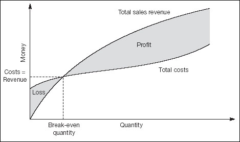

Even if you skipped the first 22 chapters of this book and started reading here, you will be aware that practically every business incurs costs even if it is not making any sales. There are fixed costs – rent, salaries, and so on – that have to be paid regardless. It hardly needs to be said that you need to know the level of sales you must achieve in order to cover these fixed costs, to avoid making a loss. The point at which you are moving from loss to profit is known as break even.
Beanies describe the analysis discussed here as cost-volume-profit (CVP) or profit-volume(PV) analysis. Break even works for me.
To state the obvious, you break even when you just cover the costs of buying or making the product (variable costs) and other production and operating expenses (fixed costs). Here is an example. Suppose that you pay $80 a day in rental and other fixed costs, that you buy widgets for $1 each, and that you sell them for $5. Clearly, variable costs are $1 and net revenue is $4 per widget. You can probably see that you have to sell 20 widgets a day to break even – to cover your $80 fixed costs and the variable cost of sales. The twenty-first widget starts earning you net profit.
By the way, beanies refer to the $4 net revenue as the contribution to fixed costs and – ultimately – profits. If you divide the contribution by the sales price per unit ($5 in this example) you have the rather ugly named profit-volume ratio (0.80 in this example). In plain English, each dollar of sales is contributing 80 cents to the bottom line. If it is OK with you, I will refer to this price-volume thing as the contribution ratio. Accordingly:
| Break even sales volume | = fixed costs ÷ contribution (net revenue) per unit |
| = 80 ÷ 4 = 20 units |
| Break even sales value | = fixed costs ÷ contribution ratio |
| = 80 ÷ 0.80 = $100 |
If your goal is to make a profit of $20 per day, you can deduce the target level of sales as:
| Required sales volume | = (fixed costs + required profits) ÷ contribution per unit |
| = (80 + 20) ÷ 4 = 25 units |
| Required sales value | = (fixed costs + required profit) ÷ contribution ratio |
| = (80 + 20) ÷ 0.80 = $125 |
Of course, if you are operating at sales of $125 a day, and you wish to push up profits by, say $25 a day, you can rearrange the formula to this:
| Change in sales volume | = required change in profits ÷ contribution per unit |
| = 20 ÷ 4 = 5 units |
As you can probably see, you can calculate break even for any period: a day, month, year, the life of a project, etc. If you have a monthly budget to meet, you may have to calculate these figures on a monthly basis. Generally, though, it is better to work with longer periods in order to average out seasonality, and deal with varying costs and prices over a wide range of sales and output.
If you examine how your gross sales revenue rises as sales increase, you will find a curve similar to the one shown in Fig. 23.2. The more you sell, the more you earn. The curve flattens off because sales usually taper away as the market becomes saturated.

The chart also shows how costs increase with quantity. This curve starts above zero because of the fixed expenses that you have to meet even if you are not doing anything. The curve then slopes more gently than sales, reflecting the fact that prices exceed product costs (presumably!). However, the curve will turn upwards at higher volumes due to the quaintly named law of diminishing returns – you have to start employing more sales people who become more and more difficult to manage. Moreover, in some conditions, fixed cost will increase in a sharp steps. Recall from Chapter 12 that fixed costs are unchanged over a specific range. At certain quantities, there will be extra fixed expenditure on additional machinery, real estate, staff, and so on.
The point where the two curves cross indicates break even. This presupposes a perhaps unrealistic level of accuracy in the projections. If you are operating close to break even, you might want to use the normal to estimate the likelihood of staying out of the red, as outlined above.
The gap between actual or forecast sales and break even is known as the margin of safety. It reveals the extent by which sales can fall before losses are sustained. In the example here, where sales are $125 and the break-even sales value is $100:
| Margin of safety ratio | = (sales − break-even sales) ÷ sales |
| = ($125 − $100) ÷ 100 | |
| = 25% |
This shows that sales are 25% above the break-even level. Put another way, they can fall by 25 ÷ (100 + 25) = 20% before you are in trouble. A useful number to know.
Given that profit equals sales less costs, you can also see from Fig. 23.2 that profits are maximized where the sales and spending curves are furthest apart. This point may be way off the chart to the right, although at some level profits and costs usually start to converge for the reasons mentioned above. The curves may even meet at a second, upper limit of break even.
Accordingly, by extending this analysis using cost and revenue projections as discussed in Chapters 10 to 14, you can identify your lower break even point, possibly your maximum profits, and maybe the upper limit on sales. The point where profits are maximized is perhaps the optimum sales and production level, depending on capacity.